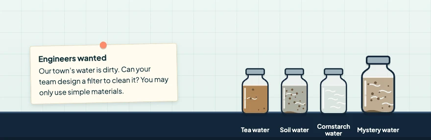

From 2015 to 2017 at UNC Greensboro, I worked with teachers in Title I elementary schools using the Engineering is Elementary curriculum. I led sessions at a week-long summer institute and coached teachers through the school year. By 2017, the program had worked with nearly 100 teachers, and the work led to a study I co-authored, published in 2025.
Helping elementary teachers teach engineering for the first time
Engineering is Elementary is a curriculum from the Museum of Science, Boston, that brings the engineering design process into K–5 classrooms through stories and hands-on design challenges.
Many of the teachers were teaching engineering for the first time. For most, the science was familiar, but the design process was new. Some also found it hard to step back and let students explore on their own. Our goal was for teachers to learn engineering by doing it, the way their students would, and then to have support as they brought it into their own classrooms.
A week of learning like their students
Each institute brought together 20 to 30 teachers for a week. I led sessions on the engineering design process, pairing each step with a hands-on activity. Teachers then worked in small groups through a full Engineering is Elementary unit, testing materials and using evidence to design, build, and improve their solutions.
Working through the design process themselves helped teachers grow more comfortable teaching it.
How the unit builds toward the design challenge
- Prep lessonTechnology in a bagStudents discover that everyday objects are technologies someone designed.
- Lesson 1Saving Salila’s TurtleA storybook introduces a girl in India who designs a filter for her turtle.
- Lesson 2Who are environmental engineers?Students spot sources of air, water, and soil contamination in a community.
- Lesson 3Exploring filter materialsGroups test screen, paper filters, and sand and gravel on three kinds of dirty water.
- Lesson 4Designing a water filterGroups plan, build, score, and improve a filter for “Mystery water.”
The water filter challenge, reimagined as a virtual lab
In the original unit, teachers worked with the engineering design process to test materials like screen, cheesecloth, coffee filters, sand, and gravel. They used their findings to decide how to layer a filter, then evaluated each design against the same criteria.
Back then, we worked with physical materials, all in the same room. Ten years later, I wanted to see what I could build with the tools available now. The Water Filter Lab is a working prototype where learners test materials, plan and build a filter, then evaluate and improve it. Along the way, facilitator notes share what teachers did in the institute and what I coached for at each step.
I built this for my portfolio. It’s inspired by the original unit, but it isn’t Engineering is Elementary material and doesn’t use real test data.

The lab opens in fullscreen, so the materials, tests, and facilitator’s notes have room. Press Esc or choose Exit to come back to this page. If fullscreen doesn’t open on your device, open the lab in a new tab (opens in a new tab) ↗
The challenge connected to students’ lives, too. In a 2017 UNC Greensboro profile of the program, one teacher described how the unit coincided with the Flint, Michigan water crisis, prompting a class discussion about water challenges around the world.
I designed this simplified version of the water filter challenge from the one teachers worked through in our summer institute.
Who did what
I designed the learning experience and the facilitator’s notes, and worked with Claude Design (Opus) and Claude Code (Fable) on the layout, interactions, and build.
My expertise is in learning design. AI helps me turn ideas into working prototypes we can explore and test. From there, I love collaborating with UX designers and software engineers to refine the experience and get it ready for learners.
Three design decisions to support teacher learning
The teachers needed more than a week of training. These three decisions shaped the program from the summer institute through the school year.
- Let teachers learn engineering the way their students would.Teachers worked through a full Engineering is Elementary unit in small groups, testing materials and using evidence, so the design process felt familiar before they taught it.
- Keep support going after the summer.When teachers asked for more, the summer institute grew into a year-round community with coaching in their classrooms.
- Use one framework for both the professional development (PD) and its evaluation.A Community of Inquiry model shaped how we designed sessions and coaching, and what we looked for in observations, interviews, and focus groups.
A framework for working and learning together
The Community of Inquiry model describes learning as something a group builds together, through three overlapping kinds of presence: social, cognitive, and teaching. The deepest learning happens where all three meet. We used it as a shared lens for both sides of the work: how we designed the institute and coaching, and what we looked for when we observed classrooms and talked with teachers.
- 1. Triggering event“Mystery water” needs cleaning.
- 2. ExplorationTest screen, paper filters, sand, and gravel.
- 3. IntegrationUse the results to decide how to layer a filter.
- 4. ResolutionBuild, score, and improve the design.
From the institute to their own classrooms
The summer institutes came first. Teachers then asked for more, especially those who were one of only a few in their school teaching the units, so the support grew into a year-round community. By 2017, the partnership had worked with nearly 100 Piedmont-area teachers. Success here looked like relationships: a year-round community that teachers asked for.
During the school year, our team worked closely with four or five teachers at a time as they brought the units into their classrooms, adapting them for each school and class.
From teacher learning to student learning
Alongside the professional development, I worked as a research assistant on three studies that followed the curriculum from teachers into classrooms.
- TeachersWhat teachers believed about engineeringI led a study of how teachers’ beliefs about science and engineering knowledge changed after teaching Engineering is Elementary, using surveys I developed and teacher interviews.
- StudentsEngineering changed who counted as smartWe asked the same students what makes a smart student, and what makes a smart engineer.A smart student…raises their hand, answers a lot of questions, reads a lot.A smart engineer…works well with others, makes smart choices about materials, and knows “you have to make mistakes so you can get better.”
- ClassroomStudents’ definitions of “good engineering”In a fifth-grade class, students defined good engineering as getting along and using evidence. Both helped, but some students held back ideas to keep the peace, and “evidence” often shrank to just the score.Carlone & Lancaster (2025), Journal of Research in Science Teaching. Open access.Read the paper (opens in a new tab) ↗
Shared with the field
Ten articles, papers, posters, and presentations, including four I led as first author.
- 2025“Getting along” and “using evidence”: Elementary engineering as contentious practiceJournal article: Journal of Research in Science Teaching
- 2018Productive friction and “getting along” in an elementary engineering classroomPaper: NARST, Atlanta
- 2017Cultural production of engineering “competence” and meaning-making in the elementary classroomPaper: Canadian Society for the Study of EducationFirst author
- 2017The cultural production of “competence” in elementary engineeringPaper: AERA
- 2016Kids love to engineer! How do elementary teachers teach engineering design?Presentation: NC Science Teachers Association, Greensboro
- 2016A new lens for examining teachers’ epistemic beliefs in science and engineeringRoundtable: AERA, Washington, DCFirst author
- 2016Examining teacher epistemic beliefs in elementary engineering educationPoster: AERA, Washington, DCFirst author
- 2016Examining elementary teachers’ existing epistemic beliefs in science and engineeringPoster: NARST, BaltimoreFirst author
- 2016Cultural meanings of engineering competence in a high needs elementary classroomPaper: AERA, Washington, DC
- 2016Fifth grade students’ meanings of engineering competencePaper: NARST, Baltimore